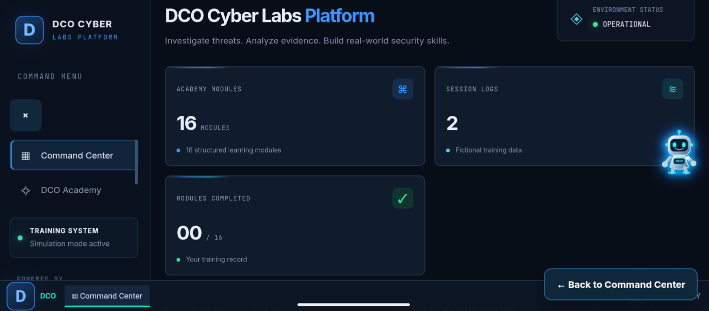
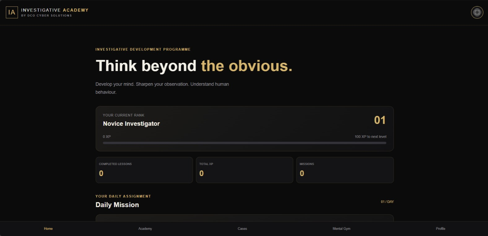
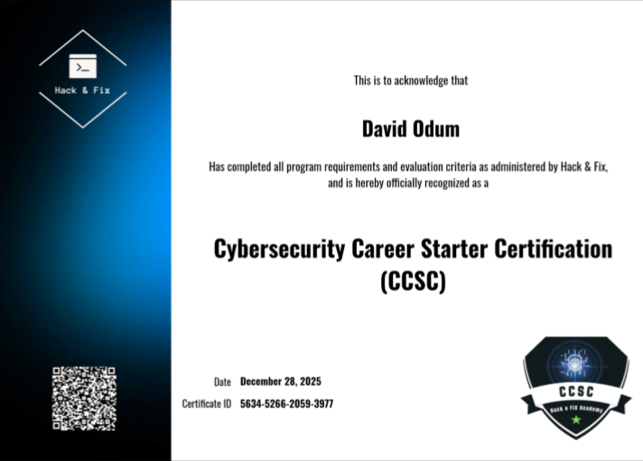
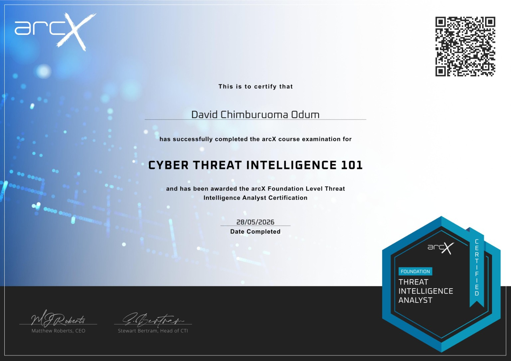

Malware Analysis
Examining suspicious files and software to understand their behaviour, structure and potential impact in controlled environments.
CYBERSECURITY ANALYST · NIGERIA
I'm David Chimburuoma Odum, CEO and Founder of DCO Cyber Solutions. I specialize in Malware Analysis and Digital Forensics. With an academic foundation in Criminology and Security Studies, I bring an investigative perspective to the examination of digital evidence.
BUILDING PRACTICAL SECURITY KNOWLEDGE
A cybersecurity learning environment built around investigation, practical exercises and digital forensics simulations.

An interactive cybersecurity investigation and digital forensics training platform featuring practical simulations across multiple security topics.

An interactive investigative development platform designed to sharpen observation, develop critical thinking and build understanding of human behaviour through structured lessons and practical missions.
02 PROJECTS / LIVE PLATFORMS
Technical investigation. Evidence. Understanding malicious activity.
Examining suspicious files and software to understand their behaviour, structure and potential impact in controlled environments.
Working with digital evidence, forensic examination processes and investigative methods to understand events involving digital devices and data.
A LITTLE ABOUT MY JOURNEY
I am David Chimburuoma Odum, a Cybersecurity Analyst and forensic examiner specializing in Malware Analysis and Digital Forensics. I am also the CEO and Founder of DCO Cyber Solutions.
I hold a Bachelor of Science degree in Criminology and Security Studies from Miva Open University. My academic background complements my work in digital forensics, particularly my interest in evidence, investigative methods and the examination of cyber-related incidents.
Through practical learning, research and cybersecurity education, I continue to develop ways to make technical security knowledge more accessible and useful.
Let's connect ↗CEO & Founder
DCO Cyber SolutionsProfessional focus
Malware AnalysisProfessional focus
Digital ForensicsTHE FOUNDATION BEHIND MY WORK
An academic foundation in criminology and security studies, complementing my professional interest in digital investigations, forensic examination and the analysis of evidence.
UNDERGRADUATE DEGREE
Miva Open University
Studied the academic foundations of crime, criminal behaviour, security and investigative studies. This background supports my interest in the relationship between criminal investigation, digital evidence and cyber-related incidents.
CYBERSECURITY EDUCATION
NIIT Port Harcourt
Completed a cybersecurity programme at NIIT Port Harcourt, building technical knowledge and practical foundations relevant to cybersecurity investigations, Malware Analysis and Digital Forensics.
PROFESSIONAL DEVELOPMENT
Professional learning and completed training programmes across cybersecurity and threat intelligence.

VIEW CERTIFICATE ↗Hack & Fix Academy
DECEMBER 28, 2025
VIEW CERTIFICATE ↗arcX — Foundation Level Threat Intelligence Analyst
MAY 28, 2026XPSEC Academy
CERTIFICATE OF COMPLETIONConnecting disciplines. Criminology provides an investigative perspective, while digital forensics applies technical methods to the examination of digital evidence.
Selected tools and environments used in my technical learning and investigations.
MY PROFESSIONAL BACKGROUND
Explore my professional background, academic qualifications and specialization in Malware Analysis and Digital Forensics.
DAVID CHIMBURUOMA ODUM
CEO & Founder of DCO Cyber Solutions, specializing in Malware Analysis and Digital Forensics.
HAVE A QUESTION OR AN IDEA?
For professional enquiries, collaboration and cybersecurity discussions, feel free to reach out.
Or email directly: dcocybersolutions@gmail.com ↗